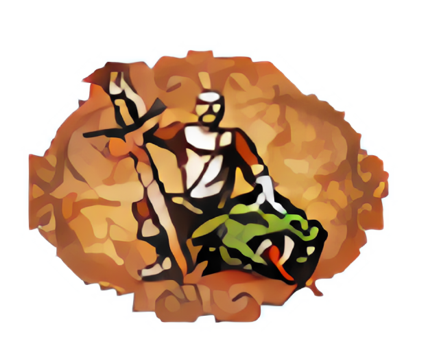

Hydra Slayer 0.3.0¶
Star | Fork | Issue


Hydra Slayer is a 4th level spell in the School of Fire Magic. Depending of the level of expertise in fire magic, slayer spell increases attack of target troop by 8.
Hydra Slayer |
|
|---|---|
|  |
|
|
|
|
|
Basic effect |
|
Target allied troop’s attack rating is increased by 8 against behemoths 👹, dragons 🐉, hydras |
|
Advanced effect |
|
Same as basic effect, except that attack bonus also affects devils 👿 and angels 👼. |
|
Expert effect |
|
Same as advanced effect, except attack bonus also affects giants/titans. |
|
 , phoenixes 🦜.
, phoenixes 🦜.What is more, it also allows configuring of complex applications just by config and few lines of code.
Communication¶
GitHub Issues: Bug reports, feature requests, install issues, RFCs, thoughts, etc.
Slack: The Catalyst Slack hosts a primary audience of moderate to experienced Hydra-Slayer (and Catalyst) users and developers for general chat, online discussions, collaboration, etc.
Email: Feel free to use feedback@catalyst-team.com as an additional channel for feedback.
GitHub¶
The project’s GitHub repository can be found here. Bugfixes and contributions are very much appreciated!
License¶
hydra-slayer is released under a Apache-2.0 license. See LICENSE for additional details about it.
Citation¶
Please use this bibtex if you want to cite this repository in your publications:
@misc{catalyst,
author = {Sergey Kolesnikov and Yauheni Kachan},
title = {Hydra-Slayer},
year = {2021},
publisher = {GitHub},
journal = {GitHub repository},
howpublished = {\url{https://github.com/catalyst-team/hydra-slayer}},
}
General